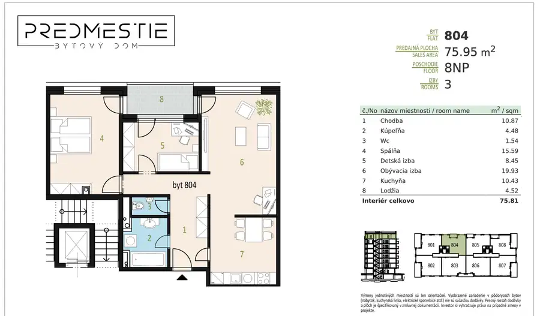
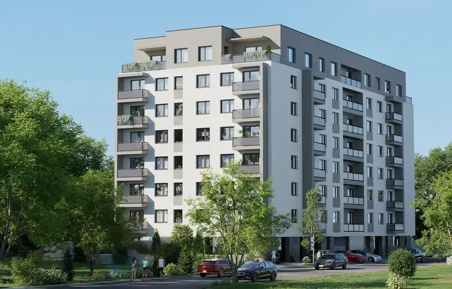
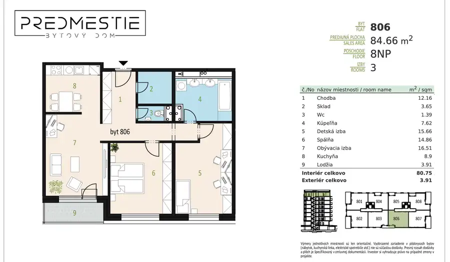
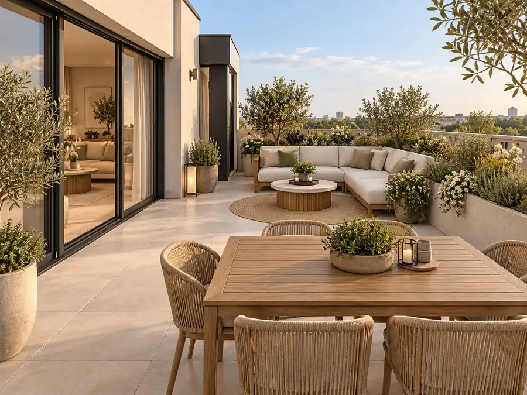
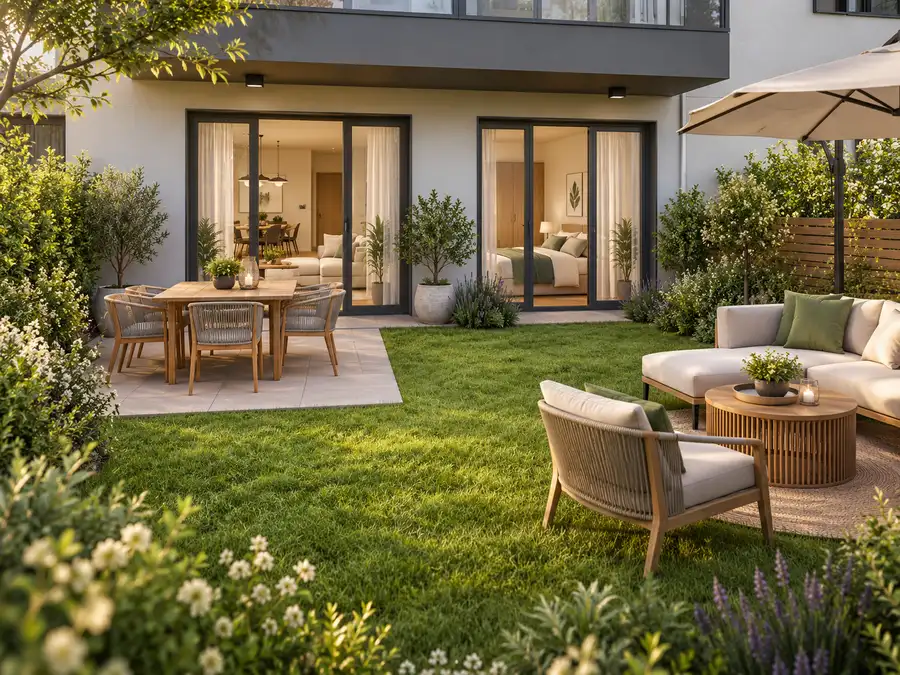
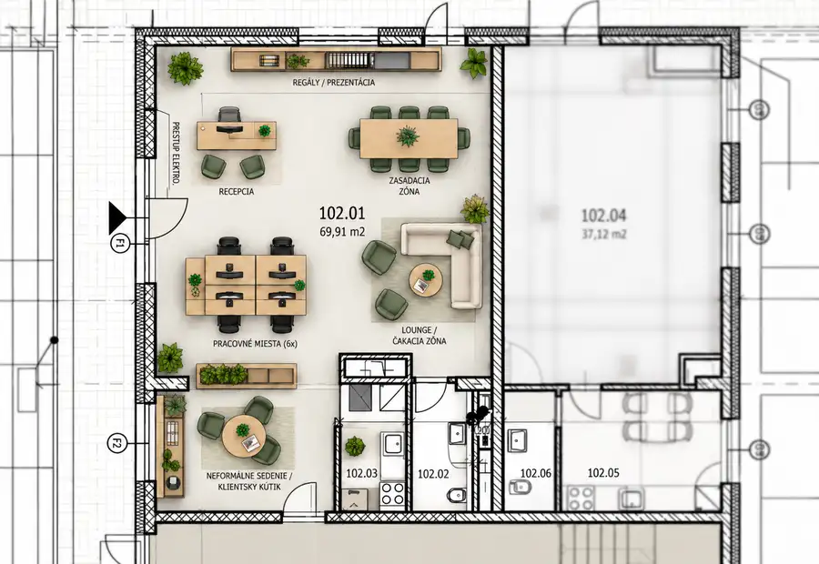
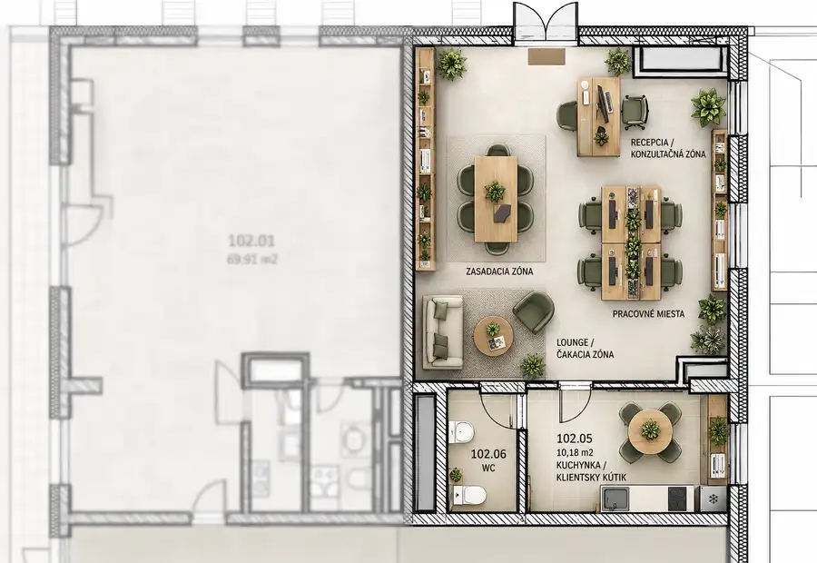
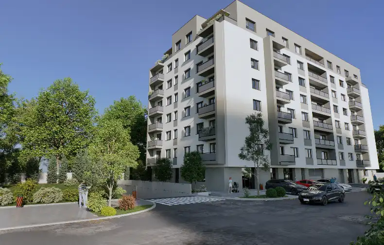

Aktuálna ponuka
8 nehnuteľností, predovšetkým byty, komerčné priestory. Každá má vlastnú stránku s fotkami, popisom a mapou.
Prezrieť ponukuLea WolzbergerováRealitná maklérka
Realitná maklérka · LEVEL REAL, s.r.o.
Predaj a prenájom nehnuteľností · Bratislava




Byt8 249 990 €2-izbový byt s výnimočnými 87 m² terasami Podunajské Biskupice, Bratislava 2-izbový41 m²4. podlažie Hľadáte byt, ktorý nekončí pri balkónových dverách?Byt B.4.1 v projekte PODZÁHRADNÁ ponúka 41,30 m² premysleného interiéru a až 87,25 m² terás. Spolu…
Byt8 297 990 €3- izbový byt s veľkou PREDZÁRADKOU Podunajské Biskupice, Bratislava 3-izbový68 m²1. podlažie Ponúkame na predaj 3-izbový byt C.1.5 na 1. podlaží projektu Podzáhradná. Byt má 68,48 m² interiéru a priestrannú predzáhradku s výmerou 58,11 m²,…
Komerčné priestory2 239 990 €Nebytový priestor 78,5 m² v novostavbe Predmestie – Bratislava, Nové Mesto Nové Mesto, Bratislava 78.5 m² Ponúkame na predaj nebytový priestor s výmerou 78,5 m² v novom rezidenčnom projekte Predmestie na Podnikovej ulici v Bratislave – Novom…
Komerčné priestory3 169 990 €Nebytový priestor 50,83 m² v projekte Predmestie – Bratislava, Nové Mesto Nové Mesto, Bratislava 50.83 m² Ponúkame na predaj nebytový priestor s výmerou 50,83 m² v novostavbe Predmestie v Bratislave – Novom Meste.Priestor má praktickú dispozíciu a…
Byt9 247 990 €Bývanie, ktoré dáva zmysel – 2,5-izbový byt PREDMESTIE Nové Mesto, Bratislava 3-izbový63.61 m²2. podlažie Nové bývanie pre moderný mestský život – v Rači, s nadhľadom a pokojomPredstavujeme vám PREDMESTIE – projekt, ktorý spája energiu mesta s výhodami…Tomuto výberu zatiaľ nezodpovedá žiadna ponuka. Napíšte mi, čo hľadáte.
Volám sa Lea Wolzbergerová. Som realitná maklérka kancelárie LEVEL REAL, s.r.o. a pôsobím predovšetkým v lokalitách Bratislava a okolie (Bratislavský kraj).
8 nehnuteľností, predovšetkým byty, komerčné priestory. Každá má vlastnú stránku s fotkami, popisom a mapou.
Prezrieť ponukuBratislava a okolie. Ponuku si môžete prezrieť podľa lokality.
Nehnuteľnosti v lokaliteOdhad trhovej ceny, príprava prezentácie, obhliadky, zmluvy a odovzdanie nehnuteľnosti.
Dohodnúť stretnutieKaždý špendlík je jedna nehnuteľnosť z mojej ponuky. Kliknite a pozrite sa.
© prispievatelia OpenStreetMap
Na čo sa pýtate najčastejšie, skôr než sa stretneme.
Odhad trhovej ceny vychádza z aktuálnych ponúk a predajov v lokalite, nie z cenníkových tabuliek. Podmienky Vám poviem pri prvom telefonáte.
Najprv obhliadka a odhad ceny, potom príprava prezentácie (fotografie, popis, inzercia), obhliadky so záujemcami, rezervačná zmluva, kúpna zmluva, návrh na vklad do katastra a odovzdanie nehnuteľnosti. O každom kroku viete vopred.
Najrýchlejšie cez WhatsApp alebo telefón. Termín stretnutia alebo obhliadky dohodneme podľa Vás.